|| Contents || Carretera de Cornela - Avenida de Victoria | Avenida de Victoria - Avenida Gen. Franco || Home ||
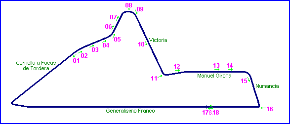
Numbers on the map represent the location where the photographs were taken. Click
hyperlinks above to view the photographs.
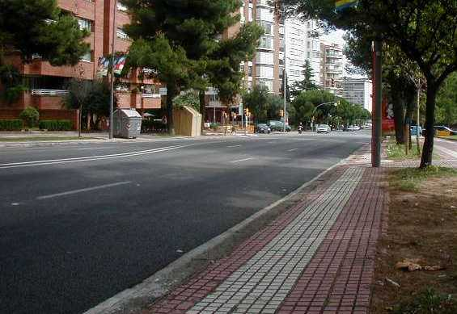
10 - Halfway down the Avenida de Victoria.
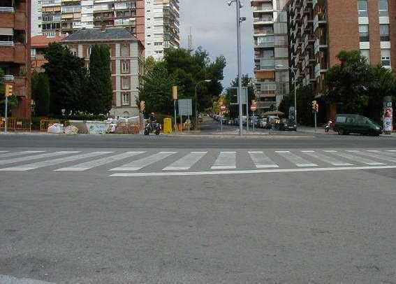
11 - Looking toward the Passeo de Manuel
Girona from the far side of the Avenida de Victoria.
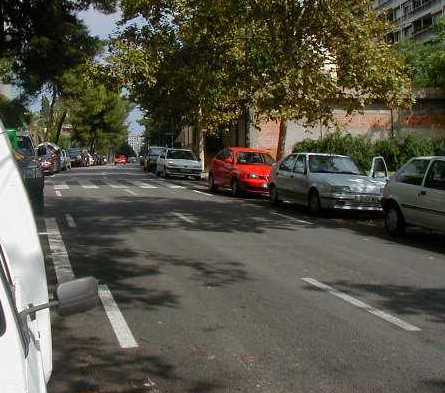
12 - Slight right kink on Manuel Girona.
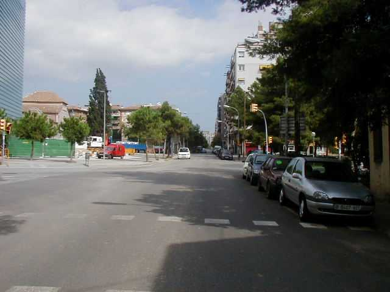
13 - Halfway along Manuel Girona.
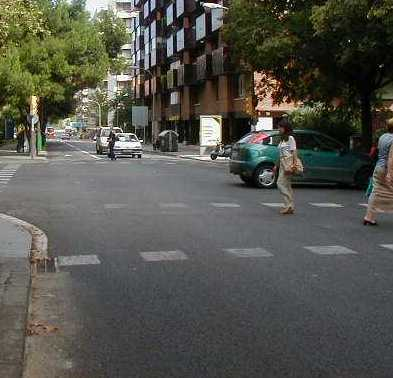
14 - Two thirds of way along Manuel Girona.
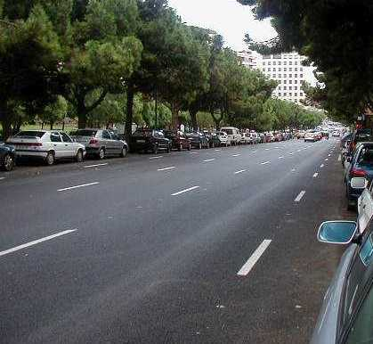
15 - Looking down Calle de Numancia.
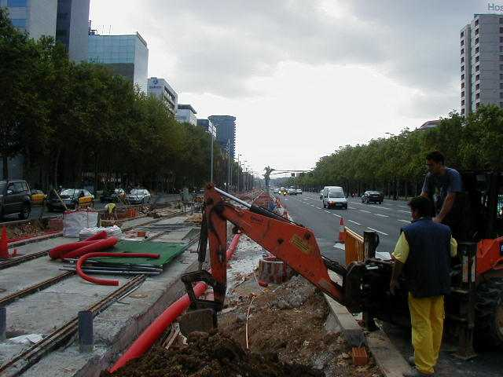
16 - Outside of junction of Numancia and
Avenida de Generalissimo Franco (since renamed Avenida Diagonal)
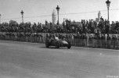
Photos from this area taken during the 1950 Gran Premio
Penya Rhin (Supplied by Toni Arch)
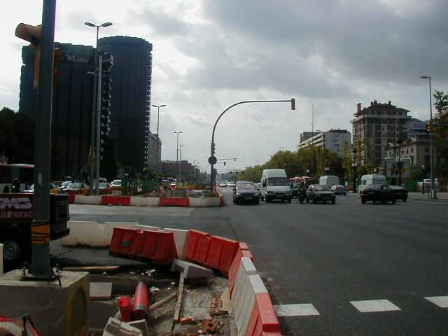
17 - Approx start line.
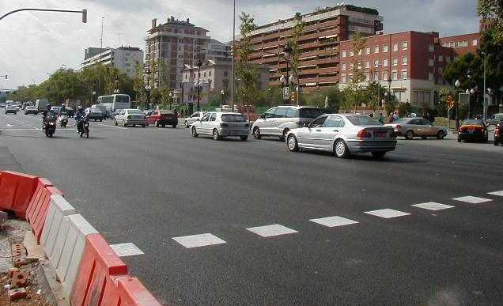
18 - Approx pit area.
| << PREVIOUS PAGE |
Return to racingcircuits.net's Photo Archive Main Index
©2002 Chris Hall. Reproduced here with kind permission.